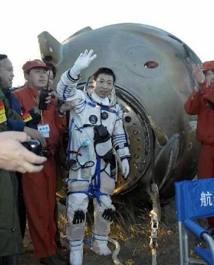

相关图片


- 

杨利伟是第一个进入太空的中国公民（2003年10月15日），在他之前，美国有四位华裔航天员曾进入太空。
2003年11月07日，杨利伟从时任中央军委主席的江泽民手中接受了“航天英雄”的称号，在人民大会堂获得了奖章和证书。
2004年02月12日，荣获2003年度感动中国十大人物。
2005年03月16日，小行星21064以杨利伟命名。
2008年07月22日，被授予少将军衔 。
2008年08月06日，奥运火炬开始北京市传递航天英雄杨利伟跑首棒。
2008年11月第四届中国航空航天月桂奖获得月桂奖特别奖。
2009年9月14日，他作为100位新中国成立以来感动中国人物之一，受到中共中央全体常委领导同志接见。
2010年10月31日，入选《2010首届王顺利百年中国人物榜》。
2014年9月15日，太空探索者协会第27届年会在北京闭幕，中国首位飞向太空的航天员杨利伟被授予列昂诺夫奖。
2017年10月27日，杨利伟荣获联合国教科文组织“空间科学奖章”。
2018年1月25日，被授予“时代楷模”荣誉称号。
2018年4月23日，杨利伟获曾宪梓载人航天基金会特别成就奖。